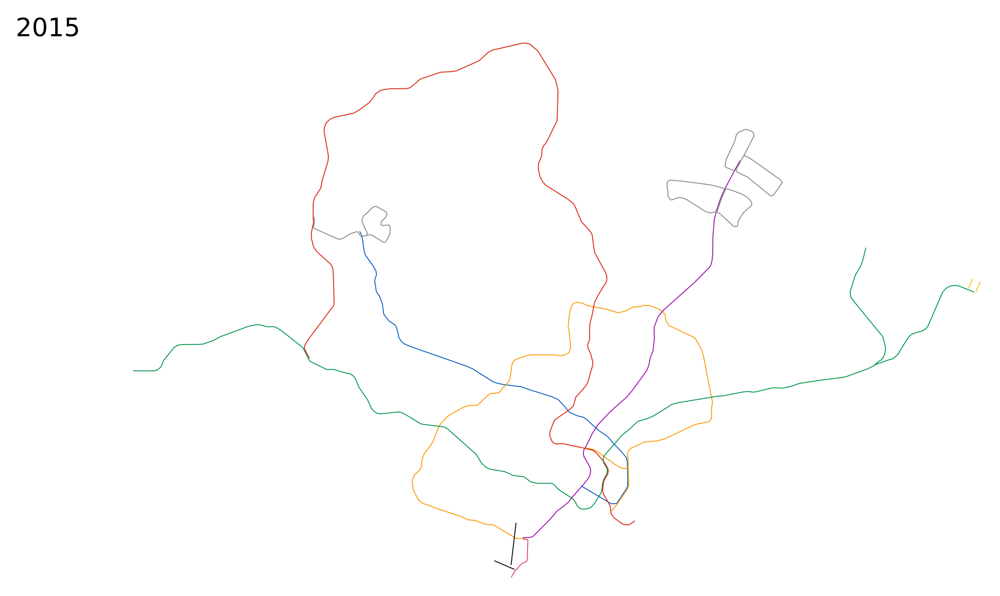
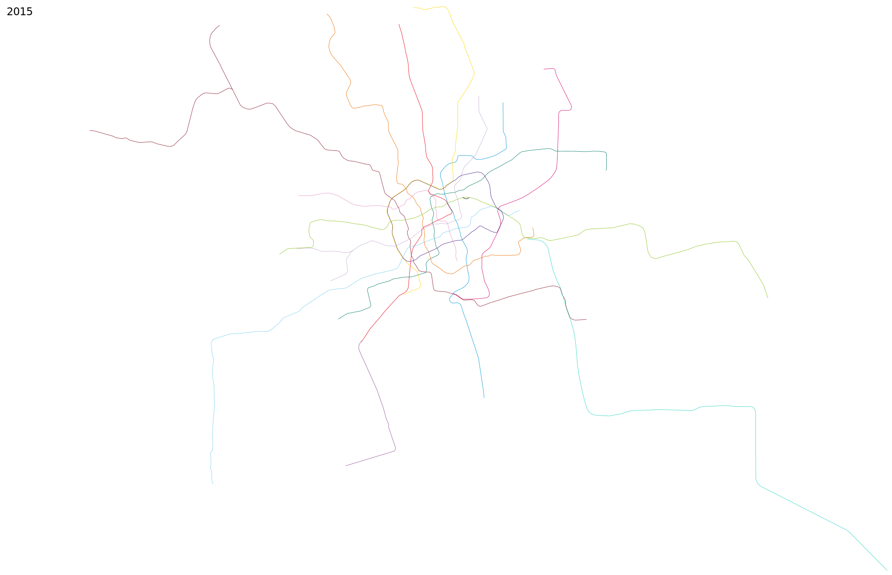
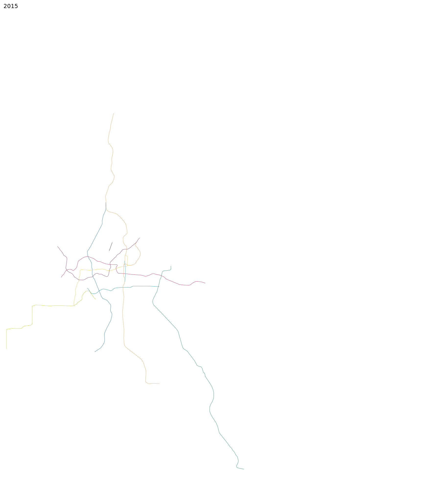

five years earlier (or press a) --- five years later (or press s)
Hong Kong
 Beijing
Beijing
 Seoul
Seoul
 Singapore
Singapore

Shanghai

Taipei
 Guangzhou
Guangzhou

five years earlier (or press a) --- five years later (or press s)
Based on frequent midday service at the end of the year in question (notes). Scale 10 CSS pixels per km.
Please send any corrections or questions to threestationsquare at gmail dot com.
 by OpenStreetMap contributors.
by OpenStreetMap contributors.